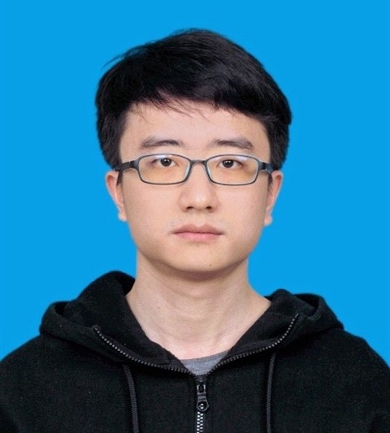

|  |
Programming Languages Lab Software Engineering Institute Department of Computer Science and Technology School of Electronics Engineering and Computer Science Peking University
Email: zyf0726 AT pku {DOT} edu {DOT} cn |
|---|
|
I am a Ph.D. student in Programming Languages Lab at Peking University, advised by Prof. Yingfei Xiong. My research interests are mainly in symbolic execution, program synthesis and software testing. |
| Education |
|
| Publications |
|